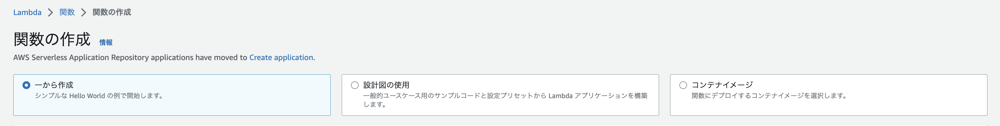
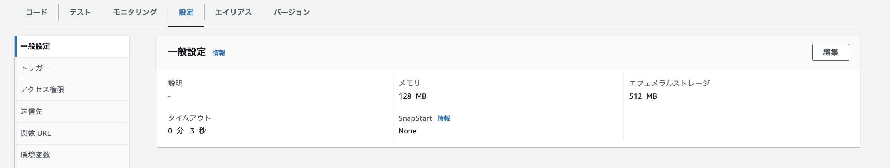
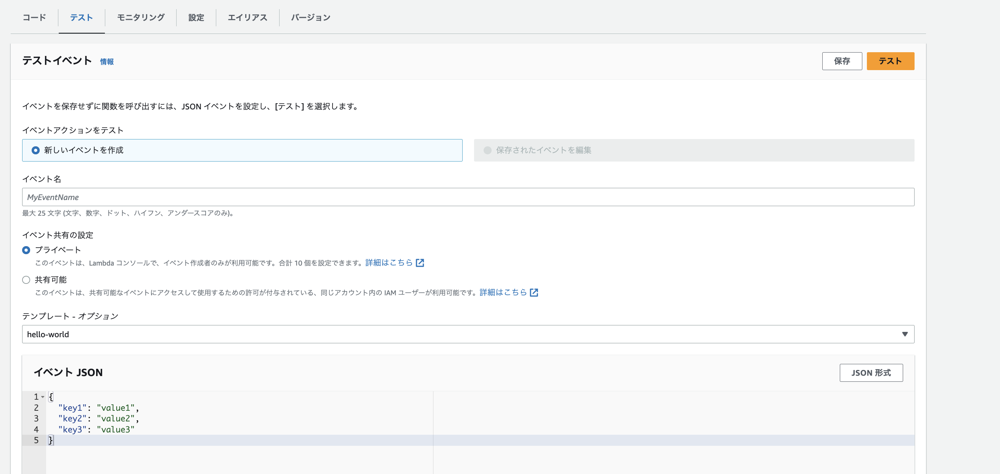

2. Lambdaの利用方法¶
2.1. Lambdaの作成¶
コンソールからLambdaを選択して、Lambdaの作成を選択。
一から作成と設計図の利用とコンテナイメージが選択できる。
一から作成: ユーザーが全て設定をすることができる
設計図の利用: AWS側でよく利用するパターンのコードやIAMの設定をしておいてくれるテンプレート
コンテナイメージ: ECRにPushしてあるDocker Imageを利用して、処理を行うことができる

2.2. 各種設定の変更¶
Lambdaの設定タブの一般設定から、メモリやタイムアウト時間を変更することができる

2.3. テスト実行について¶
Lambdaのテストタブから、テストを作成することができる。
テストではLambdaハンドラーに渡すeventの値を設定することができる。

Lambdaが呼び出された時に引き渡されるeventの中身を変えながら、テスト実行を行うことでLambdaが想定通りの動きをするかを確認することができる。
import json
def lambda_handler(event, context):
# TODO implement
return {
'statusCode': 200,
'body': json.dumps('Hello from Lambda!')
}